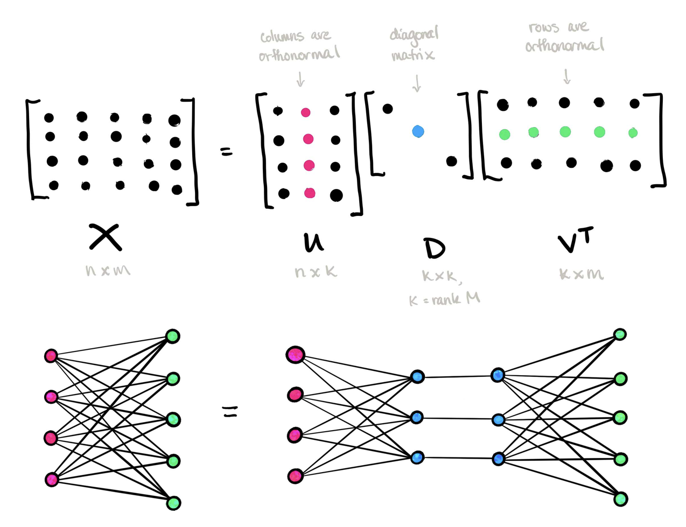

The Power of Singular Vector Decomposition: A Beginner’s Guide
R
Singular Vector Decomposition
Machine Learning
Principal Component Analysis
Topic Modeling
Author
Zhaowen Guo
Published
March 20, 2024
SVD is not nearly as famous as it should be. — Gilbert Strang
SVD is a great 1-stop shop for data analysis. — Daniela Witten
Introduction
Singular Vector Decomposition (SVD) is a matrix factorization technique that has become a cornerstone in the field of machine learning (ML). It not only allows for efficiently calculating the inverse of a matrix (if it exists) by multiplying the inverse of each decomposed simpler matrices, but also opens the door to a wide array of applications in ML and beyond.
In what follows, I will start by the definition and properties of SVD, and establish its connection with Principal Component Analysis (PCA). Then I will demonstrate different applications of SVD in ML, including but not limited to missing value imputation and latent feature extraction.
Definition and properties of SVD
SVD decomposes a data matrix \(X_{m \times n}\) into three matrices \(U_{m\times r}\), \(D_{r\times r}\), and \(V_{n\times r}\), regardless of the characteristics of the original matrix.
\[
X = UDV^T
\] where
U and V are orthogonal matrices (\(U^T U = I\) and \(V^T V = I\)), which are called left singular vector, and right singular vector, respectively
D is a diagonal matrix with non-negative and decreasing elements, which are called singular values

Image credit: Tai-Danae Bradley at Math3ma
Let’s first check dimensions of the resulting matrices after applying SVD to a toy matrix X.
# Define a matrixX <-matrix(c(1:12),nrow =4,ncol =3,byrow = T)# Apply SVDsvd_result <-svd(X)# Extract U, D, and V matricesU <- svd_result$uD <-diag(svd_result$d)V <- svd_result$vprint(paste0("The dimension for U matrix: ", dim(U)[1], " X ", dim(U)[2]))
[1] "The dimension for U matrix: 4 X 3"
print(paste0("The dimension for D matrix: ", dim(D)[1], " X ", dim(D)[2]))
[1] "The dimension for D matrix: 3 X 3"
print(paste0("The dimension for V matrix: ", dim(V)[1], " X ", dim(V)[2]))
[1] "The dimension for V matrix: 3 X 3"
We can then check matrix properties of SVD. As we can observe, matrices U and V are orthogonal, and matrix D is diagonal.
# Check properties of U and V (orthogonal matrix)is_orthogonal <-function(A){ A_T <-t(A) dot_product_1 <- A %*% A_T dot_product_2 <- A_T %*% A identity_matrix_1 <-diag(nrow(A)) identity_matrix_2 <-diag(ncol(A)) result <-isTRUE(all.equal(dot_product_1, identity_matrix_1)) +isTRUE(all.equal(dot_product_2, identity_matrix_2)) # all.equal checks "nearly equal"return(result>=1)}is_orthogonal(U) # TRUE
[1] TRUE
is_orthogonal(V) # TRUE
[1] TRUE
# Check properties of Ddiag(D) # diagonal values (or singular values in this case)
[1] 2.546241e+01 1.290662e+00 1.809728e-15
D[!row(D) ==col(D)] # off-diagonal values are 0
[1] 0 0 0 0 0 0
Connection between SVD and PCA
Now, knowing that SVD can be used to approximate any matrix, it’s an opportune moment to revisit Principal Component Analysis (PCA), an unsupervised ML method that we might be more familiar with. As we will see, SVD on a de-meaned (centered) data matrix is the same as PCA.
Recall that PCA seeks to find principal components, or the direction in the feature space with maximum variance in the data.
# Center the data matrix (column means are 0)X_centered <-scale(X, center = T, scale = T)colMeans(X_centered) # check if centered
[1] 0 0 0
# Apply SVD to the centered data matrixsvd_result <-svd(X_centered)# Apply PCA to the datapca_result <-prcomp(X, scale. = T)
As we can see, columns of the right singular vector V correspond to principal components extracted from PCA, and SVD also yields less elapsed time than PCA. A key advantage of SVD is that it does not require a preliminary step of constructing a covariance as PCA does, providing greater computational efficiency in extracting principal components.
This efficiency becomes particularly prominent when handling
High-dimensional datasets: when a data matrix possess too many features, the computational cost for constructing its covariance matrix can be huge
Full-rank data matrix: when the data matrix is full-rank, it often implies that many singular values will be non-negligible, and many principal components will be needed to reconstruct the original matrix
One popular application of SVD is to impute missing values. Without keeping all singular values and vectors, we can just retain the first d largest singular values to approximate the matrix A. The intuition is that the approximated matrix \(A_d\) being a dense matrix that captures the primary structure and patterns in the original data.
This procedure is also called lower-rank approximation, which can be implemented in the following steps:
Matrix approximation: fill in NAs with an initial guess (e.g. column means, zeros) and apply SVD with rank d, meaning that we only keep top d singular values and vectors
Missingness imputation: use the approximated matrix \(A_d\) to fill in NAs in the original matrix
Let’s use the following example for illustration:
We start by creating a toy data matrix A and call it our ground truth matrix. Then we manually add sparsity by replacing certain elements with NAs.
[,1] [,2] [,3] [,4] [,5]
[1,] 2 5 5 2 NA
[2,] NA 2 NA 2 4
[3,] 2 NA 1 NA 2
[4,] 1 3 NA 3 1
[5,] 1 NA 4 NA 1
ground_truth_matrix
[,1] [,2] [,3] [,4] [,5]
[1,] 2 5 5 2 NA
[2,] 5 2 NA 2 4
[3,] 2 4 1 NA 2
[4,] 1 3 2 3 1
[5,] 1 5 4 NA 1
Next, we apply SVD with varying d, which indicates the number of singular values/vectors.
# Define svdimpute_svd <-function(matrix, d){# fill in missingness with column means column_means <-colMeans(matrix, na.rm = T) matrix_filled <- matrix na_indices <-is.na(matrix) matrix_filled[na_indices] <- column_means[col(matrix)[na_indices]]# perform svd svd_res <-svd(matrix_filled) svd_res$d <-c(svd_res$d[1:d], rep(0, length(svd_res$d) - d))# reconstruct the matrix approx_matrix <- svd_res$u %*%diag(svd_res$d) %*%t(svd_res$v) imputed_vals <- approx_matrix imputed_vals[!is.na(matrix)] <-NAreturn(imputed_vals)}
We can use the approximated matrix \(A_d\) to reconstruct the original matrix and impute missing values. We can evaluate the performance of missingness imputation by mean squared error (MSE).
# Construct the metric MSEmse <-function(predicted, truth) {mean((predicted - truth)^2, na.rm =TRUE)}# Display MSE for different d values (rank, or number of dimensions to define the reduced matrix)svd_errors <-numeric(5)for (d in1:5) { imputed_values <-impute_svd(A, d) svd_errors[d] <-mse(imputed_values, ground_truth_matrix)}
How does SVD perform? As a baseline, consider a simple approach by replacing missing values with column means. It seems that rank-2 approximation is an optimal choice, which yields the lowest MSE. However, it’s important to note that it is not always the case that SVD approximation would outperform simple column mean imputation. We might need to consider other matrix decomposition techniques for missingness imputation, such as Non-negative Matrix Factorization (NMF), Alternating Least Squares (ALS), etc..
In line with the idea of missingness imputation, SVD can also be leveraged to enhance recommendation systems! The goal is to predict unknown preferences or ratings of users for items (e.g. movies, products, or services) based on existing ratings. A notable example is Netflix Prize competition, where Netflix offered $1 million award to anyone who could improve the accuracy of its movie recommendation system by 10%. The winning team just used SVD, along with techniques that incorporate other metadata, achieving a 10.06% improvement!
Application: Topic Modeling
SVD is a powerful and generalizable technique that provides us another perspective on topic modeling. We begin by first transforming documents into a document-term matrix, where each row represents a document, each column reflects a term, and each cell denotes frequency. To refine this step further, we can also apply Term Frequency-Inverse Document Frequency (TF-IDF) to reweigh the cell values, adjusting for the uniqueness of each term for a given document.
SVD can then be perceived as decomposing a document-term matrix \(X_{m \times n}\) into
\(U_{m \times r}\): document-topic matrix
\(D_{r \times r}\): diagonal elements represent topic importance
\(V_{n \times r}\): term-topic matrix
For topic modeling, a crucial hyperparameter that requires tuning is the number of topics (often denoted by k). In the context of SVD, the idea is equivalent to selecting the top k singular values and their corresponding singular vectors in order to approximate the original data matrix.
# Construct a document-term matrixlibrary(tidytext)library(tm)documents <-tibble(doc_id =1:8,text =c("The sky is blue and beautiful.","Love this blue and beautiful sky!","The quick brown fox jumps over the lazy dog.","A king's breakfast has sausages, ham, bacon, eggs, toast, and beans","I love green eggs, ham, sausages, and bacon!","The brown fox is quick and the blue dog is lazy!","The sky is very blue and the sky is very beautiful today","The dog is lazy but the brown fox is quick!"))tidy_documents <- documents %>%unnest_tokens(word, text) %>%anti_join(stop_words)dtm <- tidy_documents %>%count(doc_id, word) %>%cast_dtm(doc_id, word, n)
# Apply SVD and examine each decomposed matrixsvd_result <-svd(as.matrix(dtm))k <-2# choose k=2 for simplicityUk <- svd_result$u[, 1:k]Dk <- svd_result$d[1:k]Vk <- svd_result$v[, 1:k]
As we can see, the decomposed \(U_k\) matrix captures documents by topics.
Us <-tibble(`Document ID`=1:8,`Topic 1`= Uk[,1],`Topic 2`= Uk[,2])Us %>%kbl() %>%kable_styling()
Document ID
Topic 1
Topic 2
1
-0.1294362
0.4303175
2
-0.1392703
0.4926330
3
-0.5597761
-0.1933906
4
-0.0088357
0.2551944
5
-0.0175544
0.2534139
6
-0.5889438
-0.0537521
7
-0.1672636
0.6091753
8
-0.5246738
-0.1772371
The singular values are stored in the following matrix \(D_k\), which correspond to how important each topic is.
Beyond what has been discussed, some other cool applications of SVD in NLP include: information retrieval via Latent Semantic Analysis and word co-occurrence detection in word embeddings and other downstream tasks (e.g. text classification). Feel free to explore!
References and additional resources:
A wonderful twitter thread on SVD by Daniela Witten (a nice summary can be found here)